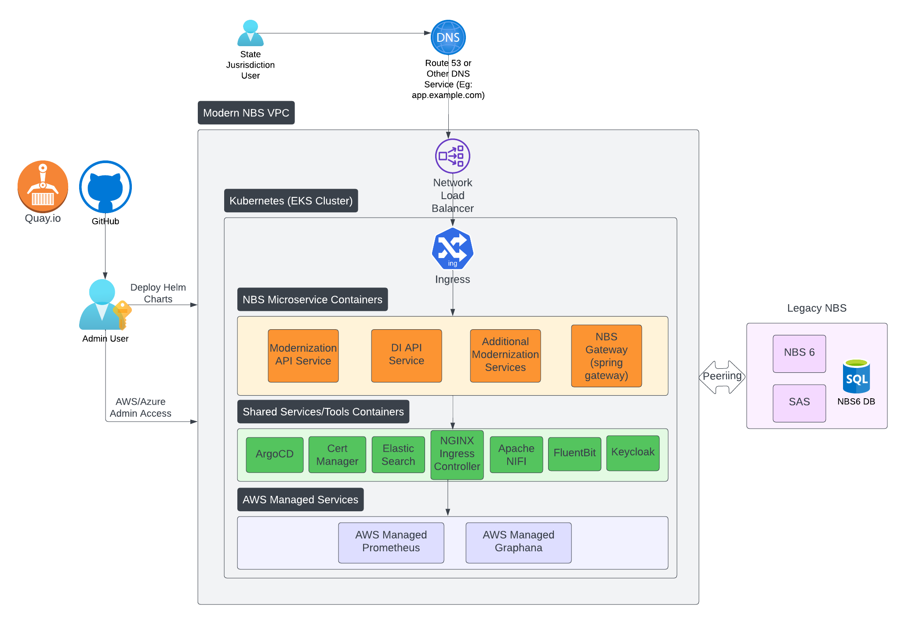

NBS 7 architecture and microservices
On this page
- Overview
- Architecture
- Infrastructure as Code (IaC)
- NBS Microservices
- NGINX Ingress
- Shared services, tools, and containers
- Data ingestion service
- Real-Time Reporting (RTR) microservices
- Data processing service
- NND service
- Keycloak
- AWS Managed Services
Overview
The deployment of Modern NBS 7 will complement and build upon the existing NBS 6 system, integrating through the strangler fig pattern. Users will experience a smooth transition between the modern NBS features and legacy NBS.
The Modern NBS will be hosted on a separate Virtual Private Cloud (VPC) to prevent any disruptions to the existing Classic NBS. These two VPCs will be interconnected to facilitate RDS access and other communication requirements.
Architecture
The architecture diagram below illustrates the key components of the Modernized NBS.

Infrastructure as Code (IaC)
The cloud environment for hosting NBS 7 is set up and configured using an infrastructure as code approach. Terraform code is used to provision and manage the cloud hosting environment, and Helm is used to manage workloads in the Kubernetes cluster. The code will be distributed from GitHub.
- The Terraform modules provided will establish the NBS infrastructure within a dedicated VPC. This includes deploying AWS EKS, nodes, EBS storage, and provisioning EFS for persistent storage.
- Terraform will also handle the creation of essential networking resources, such as private/public subnets, NAT gateways, Internet Gateways, and VPC peering.
- Additionally, Terraform will automate the setup of Helm charts, including Fluent Bit and Cert Manager, and configure AWS-managed services such as AMP and AMG.
NBS Microservices
NBS 7 introduces microservices for the modernized system, deployed using Helm charts:
- Modernization API Service: This service incorporates essential modern NBS features such as patient search, event search, patient profile, investigations, etc.
- NBS-gateway Service: Leveraging Spring Cloud Gateway, this service efficiently manages intricate strangler routing logic between modern and legacy NBS.
- Data Ingestion API Service: Our dedicated service provides essential APIs that enable NBS to seamlessly ingest HL7 data from labs and other entities into the NBS system.
NGINX Ingress
NGINX is deprecated and is replaced with Traefik.
Serving as the entry point into the Kubernetes cluster, NGINX Ingress will intelligently route users based on predefined routing rules. Users will be directed to the modernized NBS 7 features (Modernization API Service) or classic NBS 6 features (NBS-gateway Service). The deployment of NGINX Ingress will be orchestrated using Helm charts and values files.
Shared services, tools, and containers
- Cert Manager: This tool automates TLS certificate management and will be integrated into the infrastructure via Terraform. The certificate issuer connects to Let’s Encrypt CA by default, and will be installed using YAML manifests and
kubectlcommands. - Apache NiFi: As an ETL tool, Apache NiFi populates Elasticsearch indices from the NBS database. Deployment of NiFi will follow Helm charts and values files.
- Elasticsearch: NBS relies on Elasticsearch for lightning-fast searches. The deployment of Elasticsearch will use Helm chart and values files.
- Fluent Bit: Fluent Bit serves as the log aggregator, collecting logs from various microservices and Kubernetes components and, by default, pushing them to designated S3 buckets and CloudWatch.
Data ingestion service
Provides necessary foundational pieces to track and route ELR data flowing into NBS, and lays the groundwork to provide additional ingestion options for NBS.
- Accepts a variety of electronic lab reports using different versions and fields
- Saves all incoming messages for auditing, debugging, and disaster recovery and you can configure how long messages are saved
- Verifies all input data (HL7) against standard rules and provides an error when rejected
- Supports both positive and negative lab results with the appropriate code
- Provides both syntactic and semantic validations
- Removes unwanted data such as extraneous logs using filters
- Provides duplication checks to see if the data has made it through the system before
- Includes error handling and logging for both business data and operation data for situational awareness
- Supports traffic and system health monitoring
Real-Time Reporting (RTR) microservices
Real-Time Reporting (RTR) provides rapid transformation and delivery of data from the transactional database (NBS_ODSE) to the reporting database (RDB). For detailed RTR deployment instructions, see Deploy real-time reporting.
There are 9 RTR services:
- Liquibase job: Database version control management that deploys stored procedures, tables and views required for RTR pipeline.
- Person service: Processes Patient and Provider change events.
- Observation services: Processes Observation change events.
- Organization service: Processes Organization change events.
- LDF service: Processes LDF or State-defined field data change events.
- Investigation service: Processes Public_health_case change events. This service also provides information for page builder investigation, notifications, confirmation method and updates the PublicHealthCaseFact_Modern datamart.
- Post-processing service: Calls the post-processing stored procedures to hydrate dimensions, fact tables, and datamarts.
- Debezium service: Monitors and streams the selected list of NBS_ODSE and NBS_SRTE tables to Kafka topics.
- Kafka sink service: Persists the data from the Kafka topics to the RDB_Modern database tables.
Data processing service
Provides a seamless way to process ELR in near real-time instead of depending on the system-bounded ELR batch job. This eliminates the need for the STLT to set up a batch job on their system.
NND service
Data Sync is deprecated.
The Data Sync service provides a secure API to connect to the databases in the NBS cloud, with an API endpoint service and without interrupting any operations On-Prem at Jurisdictions.
Keycloak
- At our core, we rely on Keycloak as our primary Identity Provider (IdP) and Data Ingestion APIs.
- We also leverage Keycloak for token management and SSO integration, for example, OAuth, SAML integration with Okta, etc.
AWS Managed Services
- AWS Elastic Kubernetes Service (EKS): Terraform scripts will set up the instance of EKS that NBS 7 will use. This managed service handles all lifecycle events for the Kubernetes runtime (e.g., keeping the underlying nodes patched and up to date).
- AWS Elastic File System (EFS): The NBS 7 system uses a network filesystem for persistent data storage.
- AWS Managed Prometheus (AMP): NBS will harness AWS-managed Prometheus to capture metrics from Kubernetes ingress and various microservices.
- AWS Managed Grafana (AMG): NBS will leverage AWS Managed Grafana to visualize metrics from AMP and host operational dashboards. The initial set includes three dashboards, encompassing error rates, total request volume, and latency.
- AWS Key Management Service (KMS): AWS infrastructure storage services like AWS EKS, EFS, and RDS utilize a managed key management store for persistence and encryption, ensuring a robust layer of security.
- AWS Relational Database Service (RDS): Optionally, the database underlying the NBS 6 and 7 system may be configured to run as a fully managed MS SQL Server database instance.